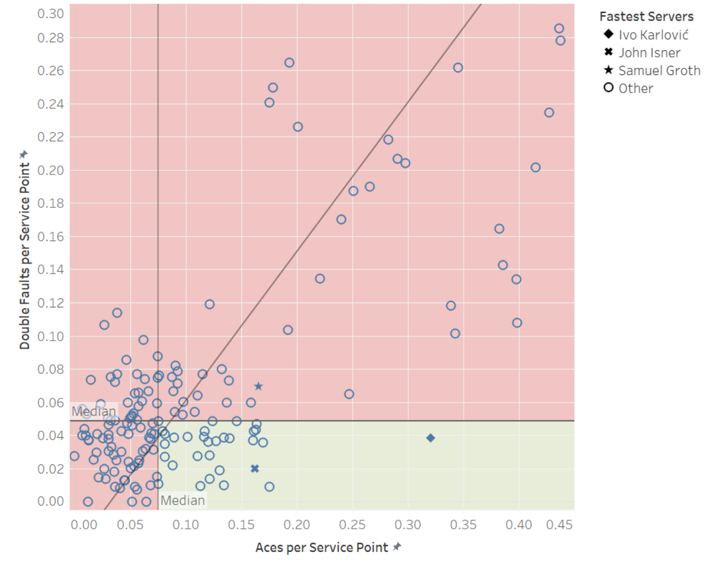
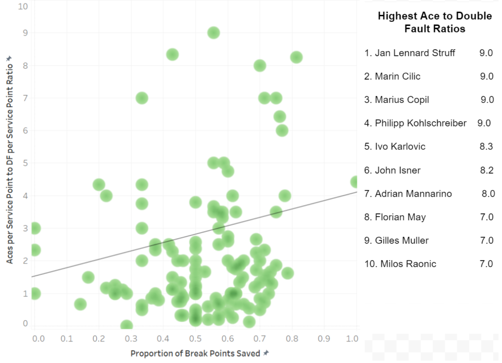

Break Points: What’s the Key?
By Jake Lamb | March 30, 2021

One of the most nerve wracking situations as a tennis player is being faced with a breakpoint (A point where the returner is one point away from winning the game). Your opponent seemingly has all the momentum and they know it. A break in professional men’s tennis more times than not leads to the player who broke the server winning the set. If there was ever a time for the server to unleash their best serve in their arsenal, a breakpoint would be the time.
An ace of course would be the absolute best case scenario for the server in this situation so that some of the pressure can be taken off of them for a moment. To the polar opposite is what every tennis player has nightmares about: double faulting in this situation. As a player tries to increase the difficulty of their serve, the chance that they double fault also increases. Thus, players who have more aces tend to also have more double faults.
As you can see in the figure above, and by finding the correlation coefficient which is 0.93, there is a strong correlation between the number of double faults per service point and the number of aces per service point in professional men’s tennis matches. The green shaded area in the graph represents the players who had an above median number of aces per service point and a below median number of double faults per service point which is something that all tennis players strive for but not many can achieve. Only 27 players (nine percent) out of 300 were able to achieve this benchmark. The red shaded area represents those players who either had an above median number of double faults per service point or a below median number of aces per service point. The most densely populated part of the graph is the area that is below the median in double faults per service point and in aces per service point. This makes sense as most players do not have an incredibly fast serve and tend to try to use their serve to set up their next shot as opposed to trying to ace their opponent every time.
Now that we have established just how hard it is to have more aces than double faults, we can look into the reality of aces and double faults in relation to break points (Some terminology: A breakpoint saved means that the server won the breakpoint).
The graph above takes a look at the percentage of break points saved in relation to a player’s ace to double fault ratio (Ace to double fault ratio was calculated as Number of Aces per service point/Number of Double Faults per service point). As we can see by the density graph, a large chunk of the graph lies below one on the Aces to Double Fault Ratio axis. This makes sense as we saw in the previous graph that a large amount of players had more double faults than aces. The regression line shows a relatively high correlation (correlation coefficient of .872) between percentage of break points saved and ace to double fault ratio. This means that as the aces to double fault ratio increases (towards more aces than double faults), the percentage of break points saved also increases.
This shows that players who can manage more aces with less double faults have a better chance of surviving a breakpoint. It pays to have a killer, reliable serve in your back pocket.